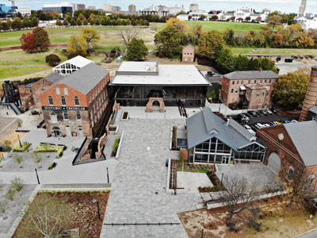
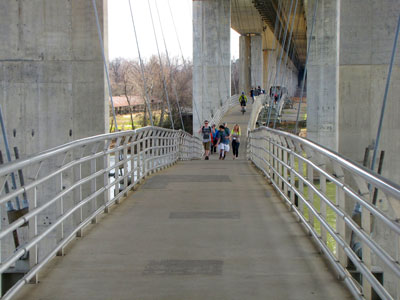
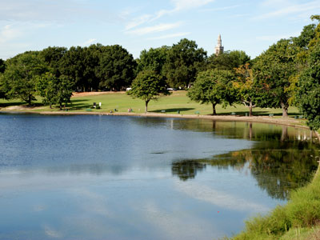
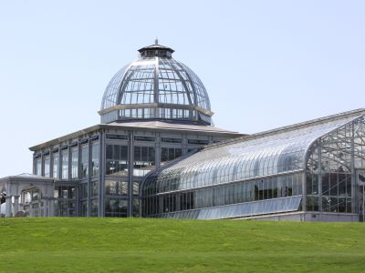
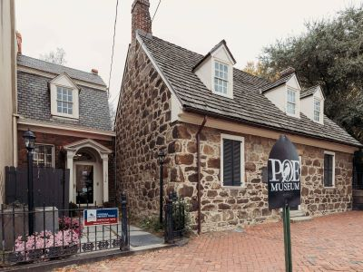
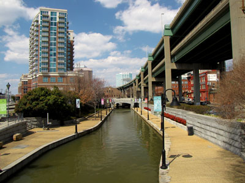

Richmond Travel Guide
The capital of Virginia, Richmond is a city rich in history and culture. Visitors can explore the city's many museums, including the Virginia Museum of Fine Arts and the American Civil War Museum, which offers a comprehensive look at the history of the Civil War. The city is also home to several historic sites, such as St. John's Church, where Patrick Henry delivered his famous "Give me liberty, or give me death!" speech. Outdoor enthusiasts can enjoy the James River Park System, which provides opportunities for hiking, biking, and kayaking along the scenic riverbanks.

American Civil War Museum, CC BY-SA 4.0, via Wikimedia Commons; Image Size Adjusted

American Civil War Museum
Comprehensive history museum interpreting the causes, course, and consequences of the American Civil War through immersive exhibits, original artifacts, and multiple perspectives.

Ben Schumin from Montgomery Village, Maryland, USA, CC BY-SA 2.0, via Wikimedia Commons; Image Size Adjusted
.jpg){kind=link}
Belle Isle
River island park offering wooded trails, exposed granite outcrops, historic ruins, and panoramic views shaped by centuries of industry, conflict, and tidal currents.
Browns Island
Riverside green space featuring open lawns, event flow of a historic urban waterway.

olekinderhook, CC BY 3.0, via Wikimedia Commons; Image Size Adjusted
.jpg){kind=link}
Byrd Park
Historic urban parkland featuring interconnected lakes, wooded paths, open meadows, and scenic overlooks designed for recreation, reflection, and seasonal change.
olekinderhook, CC BY 3.0, via Wikimedia Commons; Image Size Adjusted
Historic St. John’s Church
Historic 18th‑century wooden church preserving an original sanctuary, burial ground, and interpretive exhibits associated with foundational moments of American independence.

American Civil War Museum, CC BY-SA 4.0, via Wikimedia Commons; Image Size Adjusted
Lewis Ginter Botanical Garden
Expansive botanical garden featuring themed landscapes, seasonal events, and a conservatory in a tranquil natural setting.

Rodney Martin from Augusta, GA, CC BY 2.0, via Wikimedia Commons; Image Size Adjusted
.jpg){kind=link}
Maymont
Expansive historic estate combining lands, wildlife habitats, and a Gilded Age mansion preserved for public exploration and education.

American Civil War Museum, CC BY-SA 4.0, via Wikimedia Commons; Image Size Adjusted
Poe Museum
Historic literary site featuring exhibits, artifacts, and gardens dedicated to the life and legacy of a renowned American writer.

Ben Schumin from Montgomery Village, Maryland, USA, CC BY-SA 2.0, via Wikimedia Commons; Image Size Adjusted
.jpg){kind=link}
Richmond Canal Walk
Scenic waterfront promenade following a historic canal corridor with pedestrian paths, public art, river views, and access to downtown landmarks.
Richmond Main Streeet Station
Grand Beaux-Arts transportation hub featuring a soaring clock tower, restored concourse, and active rail platforms integrated into a historic urban landmark.
Richmond National Battlefield Park
Preserved Civil War battlefields, fortifications, historic landscapes, and interpretive sites that tell the story of pivotal military campaigns and the defense of the Confederate capital during the American Civil War.

American Civil War Museum, CC BY-SA 4.0, via Wikimedia Commons; Image Size Adjusted
Science Museum of Virginia
Interactive science center featuring hands-on exhibits, live demonstrations, and a state-of-the-art digital dome theater.
American Civil War Museum, CC BY-SA 4.0, via Wikimedia Commons; Image Size Adjusted
Virginia Museum of Fine Arts
Expansive cultural institution offering diverse art collections, rotating exhibitions, and educational programs in a modern architectural setting.
American Civil War Museum, CC BY-SA 4.0, via Wikimedia Commons; Image Size Adjusted
Virginia Museum of History & Culture
Comprehensive historical center featuring exhibitions, archives, and educational programs that explore the diverse heritage of a U.S. state.
Virginia State Capitol
Neoclassical legislative chambers and historic interiors that reflect the origins and continuity of American civic architecture.
Virginia War Memorial
Hilltop memorial complex honoring military service through engraved names, sculptures, galleries, and sweeping views designed for reflection and remembrance.
White House of the Confederacy
Restored nineteenth-century executive residence and museum featuring period furnishings, Civil War artifacts, and exhibits interpreting political leadership and daily life during the Confederacy.
Overview
Richmond is the capital of Virginia, on the fall line of the James River in the central part of the state, and it has played a major role in American history, from Patrick Henry's "Give me liberty or give me death" speech in 1775 to its time as the capital of the Confederacy during the Civil War. It is a city of history, art, and a thriving food and craft beer scene, with historic neighborhoods and a vibrant riverfront. The city also has a strong arts community, including the Virginia Museum of Fine Arts.
Visitors come to Richmond for the Virginia State Capitol, designed by Thomas Jefferson, for the Virginia Museum of Fine Arts, and for the American Civil War Museum. They also come for Maymont, Belle Isle, the Fan District, and Carytown, for the craft breweries, and for white-water rafting on the James River in the middle of the city.
History
Richmond was founded in 1737 by William Byrd II, who named it after Richmond upon Thames in England, near the falls of the James River, and it became the state capital in 1780. In March 1775, Patrick Henry gave his famous speech at St. John's Church, and in 1788 Thomas Jefferson designed the Capitol, which was inspired by a Roman temple in France. In 1861, Richmond became the capital of the Confederate States of America, and in April 1865 it was evacuated and burned before being captured by Union troops. In the twentieth century, Richmond was a center of banking, tobacco, and the civil rights movement, and in recent decades it has transformed into a lively city, with a thriving arts and food scene.
Sightseeing and Popular Landmarks
The Virginia State Capitol is one of the oldest legislative buildings in the country and is open for free tours. The White House of the Confederacy is the home of Confederate President Jefferson Davis and is part of the American Civil War Museum, and St. John's Church has reenactments of Patrick Henry's speech. Maymont is a Gilded Age estate with Italian and Japanese gardens, and Belle Isle is a rocky island in the James River with hiking trails and swimming holes. The Canal Walk, Main Street Station, and Brown's Island are other riverfront sites.
Culture and Museums
The Virginia Museum of Fine Arts has a large collection with free general admission, including one of the largest collections of Fabergé eggs outside of Russia. The American Civil War Museum tells the story of the war from multiple perspectives, and the Virginia Museum of History & Culture covers the state's past. The Poe Museum honors Edgar Allan Poe, who grew up in Richmond, and the Science Museum of Virginia and the Virginia War Memorial are other attractions.
Parks
Richmond is one of the few U.S. cities with class III and IV whitewater rapids within the city limits, on the James River, in the James River Park System, which includes Belle Isle and Brown's Island. Byrd Park has lakes and a carillon, and the Lewis Ginter Botanical Garden has themed gardens and a conservatory. Richmond National Battlefield Park protects Civil War sites around the city, and the Capital Trail is a 52-mile paved trail to Williamsburg.
Seasons and Weather
Richmond has a humid subtropical climate. Summers are hot and humid, with highs in the upper 80s°F, and winters are mild to cool, with highs in the 40s and 50s°F and about 10 inches of snow. Spring and fall are the most pleasant seasons, and thunderstorms are common in summer.
This article uses material from Wikipedia as well as information from official tourism and institutional sources. Key references include Visit Richmond, Virginia Museum of Fine Arts, American Civil War Museum, Maymont, Virginia State Capitol, Virginia Tourism, and National Weather Service Wakefield. Wikipedia material is from the articles "Richmond, Virginia" and "History of Richmond, Virginia", and is available under the Creative Commons Attribution-Share-Alike License 3.0.